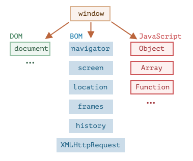

Le langage JavaScript a été initialement créé pour les navigateurs web. Dès lors, il a évolué et est devenu un langage aux multiples utilisations et plateformes. Une plate-forme peut être un navigateur, ou un serveur Web ou un autre hôte, ou même une machine à café “intelligente” si elle peut exécuter JavaScript. Chacun d’entre eux fournit des fonctionnalités spécifiques à la plate-forme. La spécification JavaScript appelle cela un environnement hôte.
Un environnement hôte fournit ses propres objets et fonctions en plus du noyau du langage. Les navigateurs Web permettent de contrôler les pages Web. Node.js fournit des fonctionnalités côté serveur, etc. Voici une vue globale de ce que nous avons lorsque JavaScript s’exécute dans un navigateur Web :

Il existe un objet “racine” appelé window. Il a 2 rôles :
Et nous l’utilisons ici comme une fenêtre du navigateur pour voir la hauteur de la fenêtre :
Il y a d’autres méthodes et propriétés spécifiques à la fenêtre, nous les étudierons plus tard.
Document Object Model, ou DOM en abrégé, représente tout le contenu de la page sous forme d’objets pouvant être modifiés.
L’objet document est le “point d’entrée” principal de la page. Nous pouvons changer ou créer n’importe quoi sur la page en l’utilisant.
Par exemple :
La spécification DOM explique la structure d’un document et fournit des objets pour le manipuler. Il existe également des instruments autres que les navigateurs qui utilisent DOM.
Par exemple, les scripts côté serveur qui téléchargent des pages HTML et les traitent peuvent également utiliser le DOM. Ils peuvent cependant ne supporter qu’une partie de la spécification.
Il existe également une spécification distincte, Modèle d’objet CSS (CSSOM) pour les règles CSS et les feuilles de style, qui explique comment elles sont représentées en tant qu’objets et comment les lire et les écrire.
CSSOM est utilisé avec DOM lorsque nous modifions les règles de style du document. En pratique cependant, CSSOM est rarement nécessaire, car nous avons rarement besoin de modifier les règles CSS à partir de JavaScript (généralement, nous ajoutons / supprimons simplement des classes CSS, pas de modifier leurs règles CSS), mais c’est également possible.
Le modèle objet du navigateur (BOM en anglais) contient des objets supplémentaires fournis par le navigateur (l’environnement hôte) pour travailler avec tout à l’exception du document. Par exemple :
Voici comment l’on peut utiliser l’objet location :
Les fonctions alert/confirm/prompt font aussi partie du BOM : elles ne sont pas directement liées au document, mais représentent des méthodes du navigateur de communication pure avec l’utilisateur.
Le BOM fait partie de la spécification HTML générale.
Oui, vous avez bien lu. La spécification HTML disponible à l’adresse https://html.spec.whatwg.org ne parle pas seulement du “langage HTML” (balises, attributs), mais couvre également un tas d’objets, de méthodes et d’extensions DOM spécifiques au navigateur. C’est l’“HTML de manière générale”. En outre, certaines parties ont des spécifications supplémentaires listées ici : https://spec.whatwg.org.